RackTrack · live on demo.racktrack.ai · 18 September 2026
A difference on a rack, from the photo to the record
The whole workflow, run on the live server this afternoon on a real rack with a real record behind it. Every screenshot is the running system, not a mock. Two people took part, as the specification requires: the admin who raises and assigns, and a second person who approves.
Found
281differences between the rack and the record
Asked
9questions, one per device
People
2the admin, and an approver who never touched the work
Written
65objects into NetBox, 8 refused and named
The workflow, step by step
Fifteen screens in the order they happened. The first two are the RackTrack app on a phone; the rest are RackTrack Approvals.


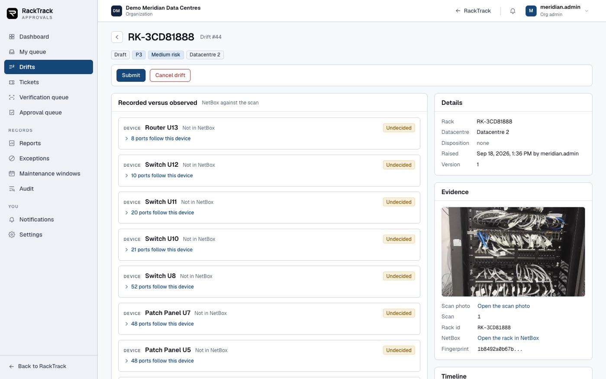
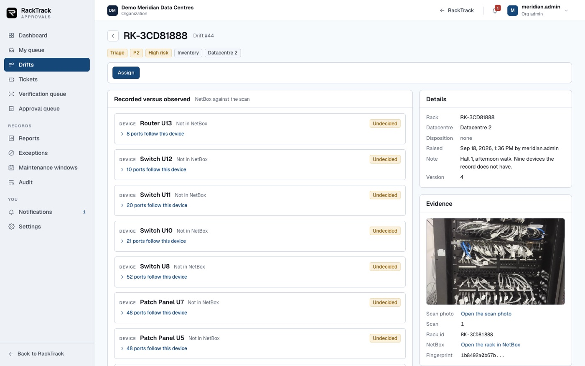
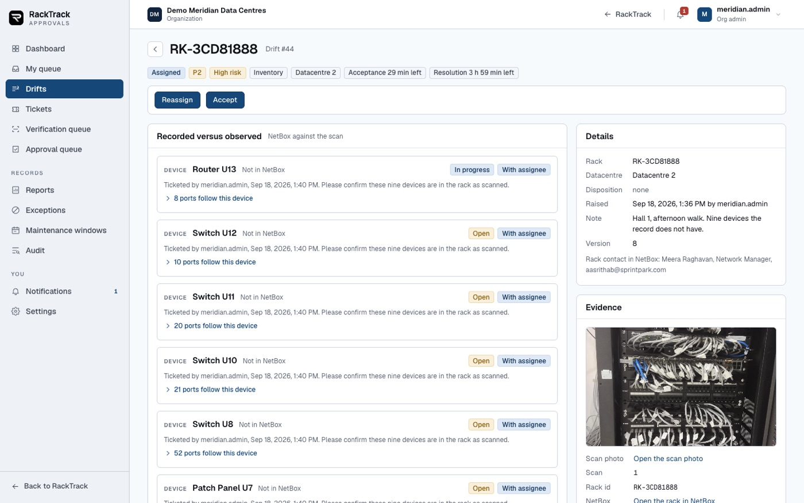
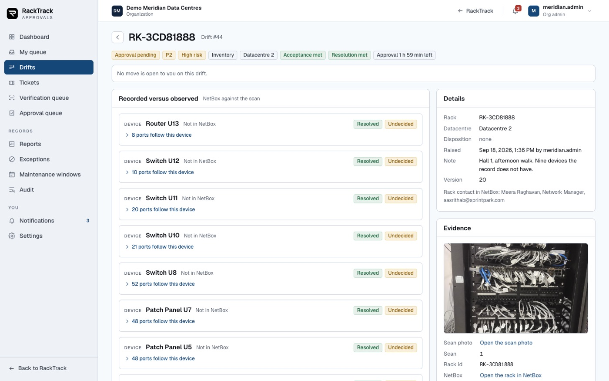


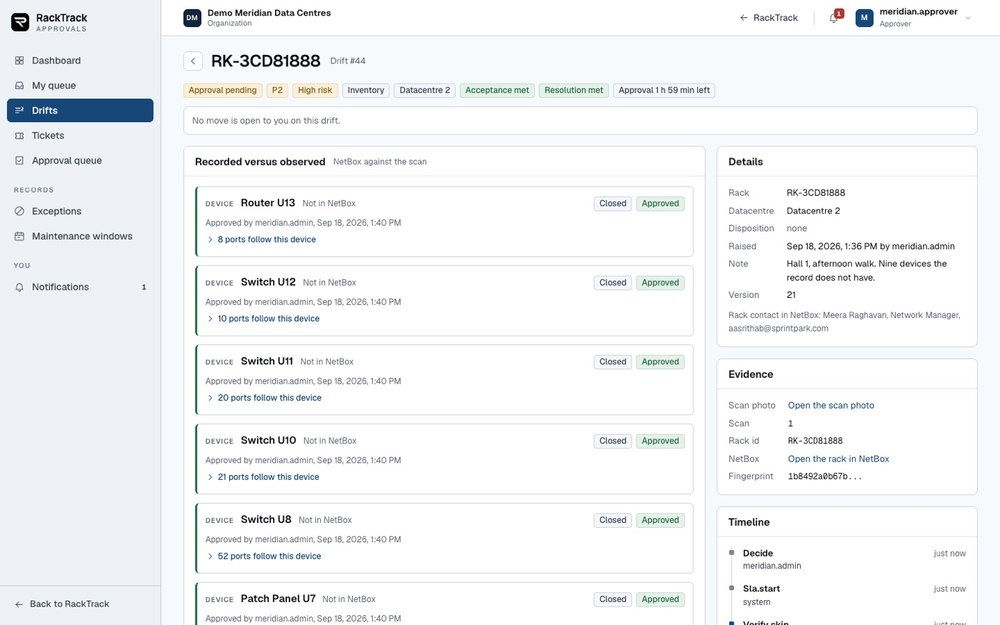
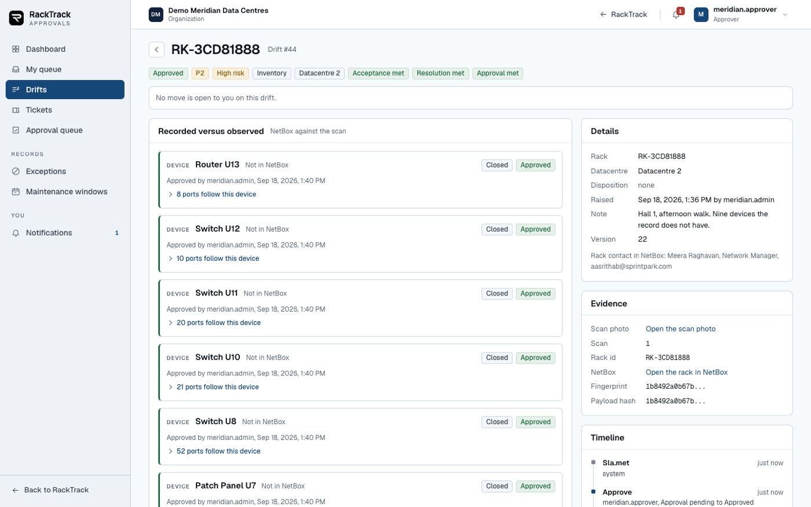

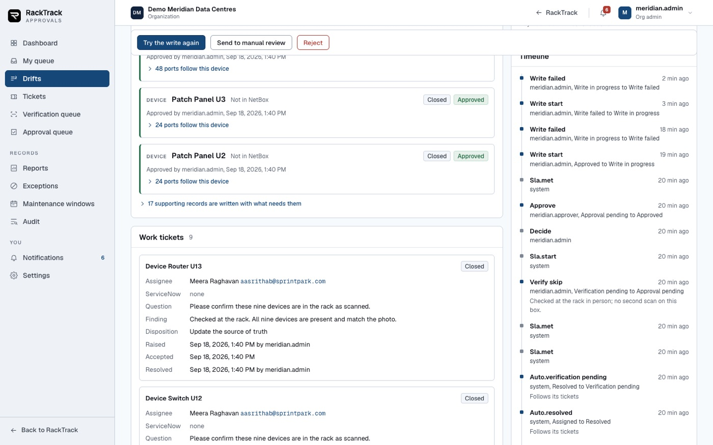
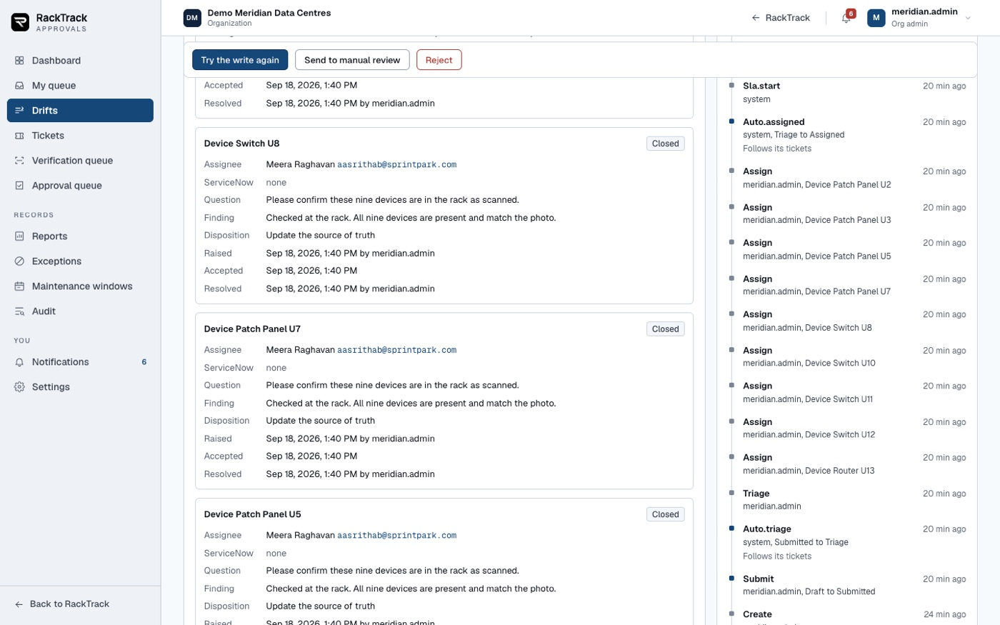
The rest of the application
What an operations team uses around the daily work.
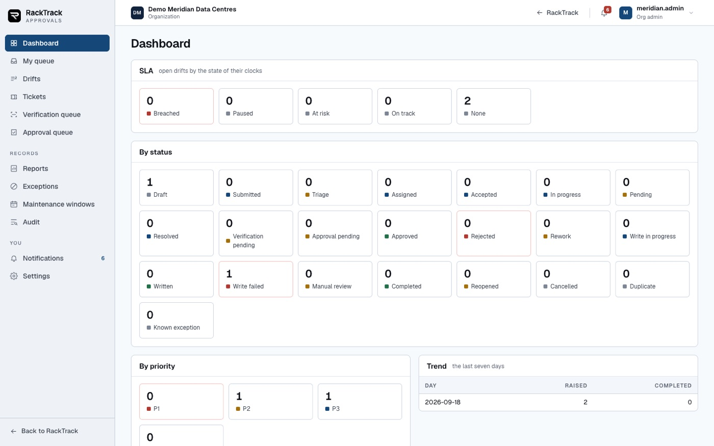

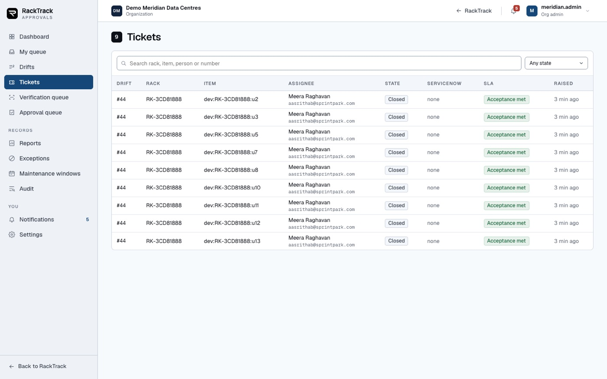

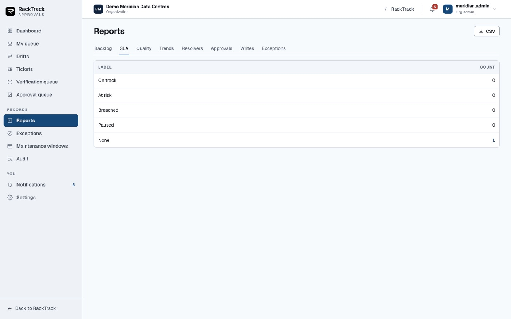
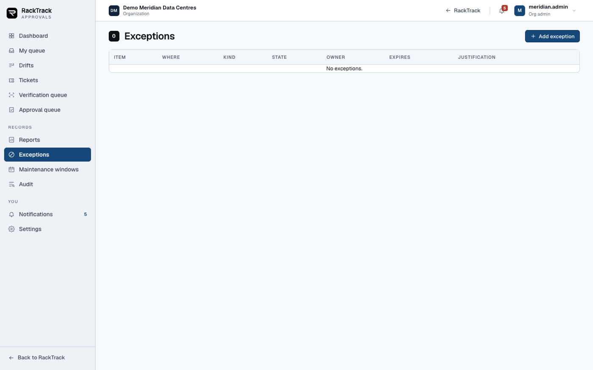
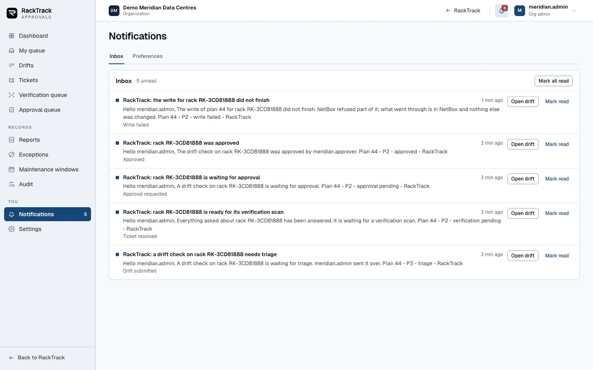

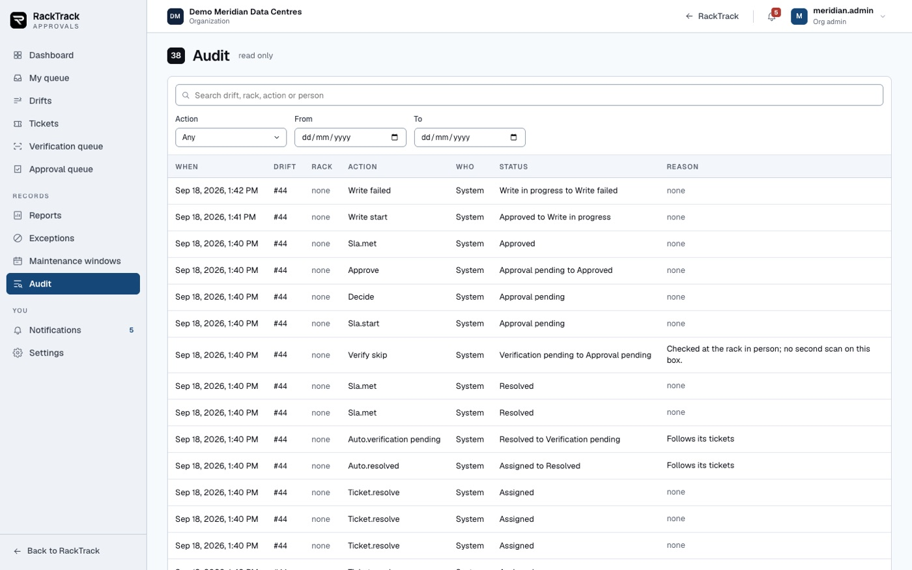
On a phone
An admin approving from a corridor is a real person, so every screen works at a phone's width.
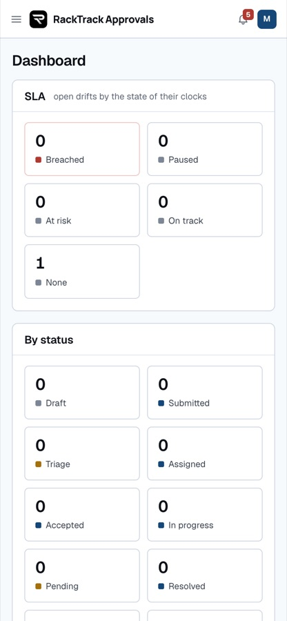

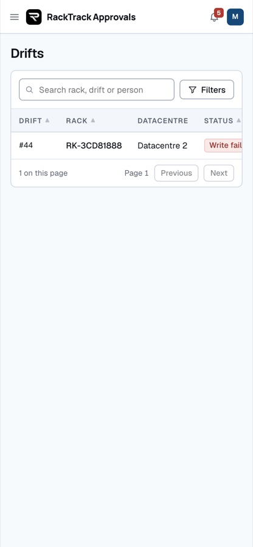
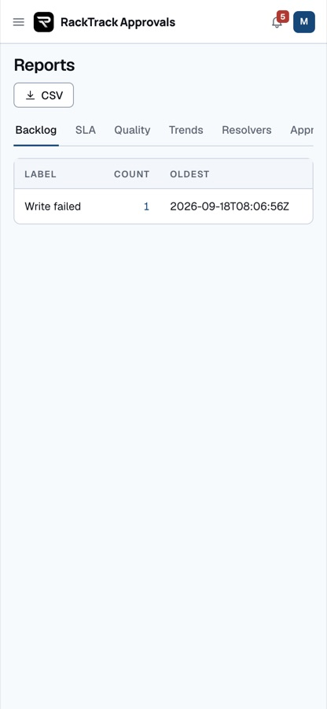
The rules, and where each one was proved
| The rule | Where it showed | |
|---|---|---|
| The technician never decides | Their screen has one button, Send to the admin. The server refuses them the rest. | held |
| Assign before you decide | Approve and reject stayed shut until each ticket came back. A decision sent early was refused with "assign first". | held |
| A resolved ticket is not an approval | Nine tickets came back resolved, with findings, and the plan waited. | held |
| Whoever did the work does not sign it off | The admin who resolved the tickets was refused: somebody else has to make this decision. | refused |
| Only an admin writes | The approver, who may approve, was refused the write. | refused |
| A fix is verified before approval | The plan would not move to approval until a verification was recorded, here in person with a reason. | held |
| An approval is bound to what was approved | Recorded with the hash of the approved items and the plan version. | held |
| A failed write never looks like a success | 8 refusals meant "write failed", each named, with the retry offered. | held |
| Nothing is deleted in the record | The writer creates and updates only. | held |
| A check belongs to one organization | A check raised in another organization is not listed and cannot be opened, for anybody, including the platform owner. | held |
| Every step is written down | The timeline and the audit view carry who did what and when. | held |
Where it lives, and what it is not
- Its own application, on the same site. RackTrack Approvals is a separate bundle at
demo.racktrack.ai/approvals/. Same server, same database, same sign-in. The RackTrack app keeps the technician's side and links out. The portal is a different product and has nothing to do with it. - ServiceNow stays the work system. Assigning raises an incident there and reads its state back. RackTrack holds the evidence, the verification and the permission to write.
- Not built, and deliberately. Alerts into Teams, which needs tokens we do not have; and the "intelligence" phase of the specification, which is advisory by its own description.
- Known and open. Eight of the write's refusals were objects NetBox already held under another key; they should be matched rather than counted as failures, and that fix is in hand. A write of a few hundred objects outlasts the request that starts it, so the page follows the plan until it lands.
Try it yourself on demo.racktrack.ai. Sign in as an organization admin, then open Approvals. Do not use the platform owner account for this: a check belongs to an organization, and the owner is in none.